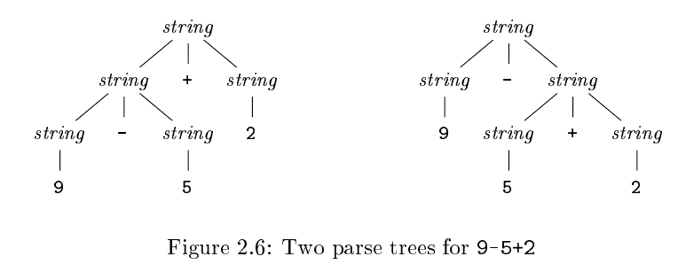
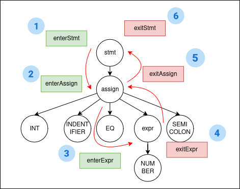
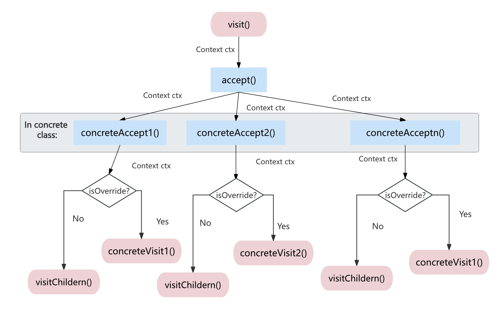

Week 5 - Parser 2¶
Ambiguity 二义性¶
回顾：二义性（Ambiguity）
给定一个文法，如果对于某个句子存在不止一棵解析树（Parse Tree），那么这个文法就是二义的（Ambiguous）。
考虑 Calc1 文法：
上述的 Calc1 文法可以接受字符串 9-5+2，但是它存在两种输出的 Parse Tree：

如果我们使用小括号来表示数字的结合顺序，那么该运算式有两种结合方式：(9-5)+2 和 9-(5+2)。我们将这种情况称为 Ambiguity 二义性。
显然的，第二种结合方式不符合我们对计算顺序自然的认识。同样的，在 Parser 中，我们也不希望出现一个字符串能被解析成不同种 Parse Tree 的情况。
Associativity of Operators 结合性¶
当一个 Operand (操作数) 的前后同时存在一个 Operator (操作符) 时，我们需要定义这个 Operand 和哪个 Operator 结合。
我们说 +/- Operator 是 左结合 的 (left-associativity, or associate to the left)，即：当存在一个 Operand (例如 5) 的左右两边同时出现 加号/减号 时，这个 Operand 先和 左边的加号 结合。
以 9-5+2 为例子，5 的左右两边出现了加号和减号，所以 5 先和左侧的 - 结合。
C 语言的 Assignment Operator = 是右结合 (right-associativity) 的，那么 a=b=c 就应该被解释为：a=(b=c)，即中间的 b 先和右侧的 = 结合。
Precedence of Operators 优先级¶
在上述文法中考虑表达式 9+5*2，它可以有两种 Parse Tree：(9+5)*2 和 9+(5*2)。即使我们定义了加减乘除符号均是左结合的，但是结合性规则仅适用于 相同级别操作符 的情况，这仍然没有完全解决二义性问题。当处理多于一种的操作符时，我们还需要定义它们之间的优先级。
我们说 * 的优先级高于 +，是指在表达式中，操作数会优先与 * 结合。例如，在 9+5*2 和 9*5+2 中，5 都优先参与乘法运算，因此这两个表达式分别等价于 9+(5*2) 和 (9*5)+2。
在 ANTLR 中解决文法二义性¶
优先级¶
对于文法 Calc2，我们需要定义 * 的优先级高于 +，只需要将 expr '*' expr 写在 expr '+' expr 上面即可。
ANTLR 会自动选择靠前的 Alternatives，即优先结合 *。
但是上述写法引入了另一个问题： * 的优先级高于 / 了，对于这两个字符串：1 * 2 / 3 和 1 / 2 * 3，ANTLR 会把它们解析为：(1*2)/3 和 1/(2*3)。
这时候，我们可以使用 Subrule 处理这种同级别优先级的情况：
在 ANTLR 中定义结合规则¶
ANTLR 默认所有的运算符都是左结合的，如果需要设置某条 Alternative 为右结合，在开头标注 <assoc=right> 即可：
grammar Calc2;
expr : expr ('*'|'/') expr
| expr ('+'|'-') expr
| <assoc=right> expr '=' expr
| factor
;
错误处理¶
一个强大的编译器在面对错误的程序时，应该向开发者输出丰富的报错信息，包括错误的位置，错误的类型（这里的错误指的是语法上的错误，例如没加分号，少加了一个括号等；这里要与语义上的错误相区分，语义上的错误指的是比如使用了从未定义过的变量、数组越界等）。ANTLR 非常强大的一点在于其内置了错误处理和恢复策略，注意，这里不仅是向开发者报告错误信息，还要在报错后 恢复 到发现错误之前的状态然后接着处理接下来的输入内容（不是只要碰到一个错误就直接退出语法分析了）。
我们下面只对 ANTLR 的错误报告和恢复做一些简单的介绍，这并不需要你额外多做些什么工作，然后我们会介绍如何通过语义动作处理一些特殊的错误。
ANTLR 默认的错误处理机制¶
单个 Token 的错误¶
在进行语法分析的过程中，进行词法匹配是一个非常常见的行为。例如面临这样的一个语句
我们需要一个个匹配 if , ''('' , 然后接下来递归地匹配exp规则, 以此类推。下面这条语句是一个合法的stmt。每一个词法符号，每一个子规则exp，stmt都能完美对应上。
但是如果我们出现了这样一句
在进行词法匹配的时候，我们期望在 if 之后碰到的是 ''('' ，但是我们碰到了 ''x'' , 这出现了词法符号不匹配的问题，ANTLR 首先会尝试填上一个 ''('' 号看能否继续处理（ANTLR 的实际做法是看当前碰到的字符能否匹配上语法规则中 ''('' 的下一个字符），在我们这种情况下其实这样做是可以的，于是危机便化解了，ANTLR能够继续进行下面的语法分析，并报一个这里丢失了一个词法符号的错误。
下面这个错误是类似的，只不过 ANTLR 在发现添加一个词法符号没法正常继续解析的时候会尝试删除一个词法符号 xyz，发现果然下一个字符是我们想要的 ''('' 字符了，那么语法解析便可以继续了。
无法处理的错误¶
当面临一些复杂情况时，语法分析器无法通过一些简单的策略就完成错误恢复。此时语法分析器就会丢弃后续的词法符号，直到找到一个可以匹配本规则之后的 词法符号 （我们称之为后续词法符号集合）。这么说有点抽象，我们来看个例子，依然是这个规则
下面这个句子
我们匹配到 if 和 ''('' 时都是正常的，然后接下来我们要匹配子规则 exp 了，这时候我们发现里面是一堆“乱码”，无论是删除一个 Token 还是新添一个 Token 都没办法解决这个问题。于是我们便会开始消耗里面的字符直到碰到 exp 规则后面可能出现的字符 '')'' 为止，然后我们接下来恢复到此前的解析状态，装作 exp 已经解析完的样子，再继续向下解析。这样的策略在面临上述情况时是十分有效的。
事实上ANTLR会在进入每一个规则的时候都维护这样一个 后续词法符号集合 以便恢复。
如何自定义自己的错误处理机制¶
自定义报错信息¶
你可以通过如下方式定义自己的错误输出格式，首先构建一个类继承 BaseErrorListener 然后重载 syntaxError 函数，这个函数的参数就是你能够用的所有信息，你可以用它来构建你自己想要的输出格式和内容，然后输出出来。
import org.antlr.v4.runtime.BaseErrorListener;
import org.antlr.v4.runtime.RecognitionException;
import org.antlr.v4.runtime.Recognizer;
//recognizer: 指示当前正在工作的解析器或词法分析器
//offendingSymbol: 指出导致错误的具体输入符号（通常是一个 Token）
//line: 报告错误发生的文本行号
//charPositionInLine: 报告错误发生的该行内的字符位置
//msg: 提供 ANTLR 生成的关于错误的具体描述
//e: 包含更详细解析错误的异常对象
public class MyErrorListener extends BaseErrorListener {
@Override
public void syntaxError(Recognizer<?, ?> recognizer, Object offendingSymbol, int line, int charPositionInLine, String msg, RecognitionException e) {
System.err.println(msg);
}
}
为了避免与默认的 ErrorListener 重复，你需要移除之前的内置的 ErrorListener 。
CalculatorParser calculatorParser = new CalculatorParser(tokens);
calculatorParser.removeErrorListeners();
calculatorParser.addErrorListener(new MyErrorListener());
语义动作¶
语义动作 是 ANTLR 语法文件中，允许开发者嵌入的、使用目标编程语言（Java）编写的代码片段。
这些代码片段被放置在 ANTLR 语法规则的特定位置，并在解析器成功匹配到对应规则时被执行。其主要目的是在解析过程中 实现自定义的行为 。简单来说，你可以让语法分析器在解析某一条规则的时候干一些事情。这些事情是由Java语言来实现的。
那么在 ANTLR 中如何做呢？你只需要在你想要嵌入代码片段的规则后面加一个大括号，在括号里面写入你想要添加的 Java 代码即可，ANTLR 会在实现 Parser 的时候帮助你自动将代码嵌入进去，你可以在生成的 Parser 文件里面看到你嵌入的代码就跟在这个规则解析的后面。
举个简单的例子
当我们解析输入程序时，如果用到了这条规则，比如说解析到下面这句的时候
便会自动输出一条 hello 。
我们可以利用语义动作机制来处理特殊化的错误。我们可以直接将常见的错误的语法也添加进我们的语法文件当中，然后如果语法解析器成功解析了这一条错误的规则时，我们便可以认为这是一条错误的语句，然后自动报错。比如下面这个例子
下面的规则定义了一种语法错误：缺少了一个 ''('' 号。我们将其单独拎了出来，规则后面代码中的这个this.notifyErrorListeners方法是 ANTLR 生成的 Parser 中内置的方法（因为我们的这段代码会被直接嵌入到 Parser 当中，所以我们可以调用这个方法）。后面的参数就是你要输出的报错信息。如果你想要获取语法错误的行信息，可以在嵌入代码中使用下面这个语句, 这里的 $ctx 指的是当前正在匹配的语法规则对应的对象。里面储存了包括当前行号、起始 Token 、结束 Token 等信息，你可以根据自己的需求来构建报错信息。
用 Listener & Visitor 将语义动作和语法文件解耦¶
我们在上一小节已经初步领略了 语义动作 这一强大特性。它允许我们的语法分析器在识别出特定的语法结构时，立即执行一段我们预设好的代码。这项特性用途广泛，除了上面提到的自定义错误处理外，它还能帮助我们构建程序的内在逻辑。
举个例子，当分析器识别出一个变量定义时，我们可以让它执行一个动作来 记住 这个变量（这对于符号表的维护非常有用）。随后，当它遇到一个赋值语句时，就可以执行另一个动作，去核实这个变量是否真实存在。原则上，所有这类与程序逻辑相关的任务，都可以在语法分析的过程中通过设置语义动作一并完成。
然而，一个实际问题是：程序中的逻辑规则数量庞大。如果把所有这些处理代码都塞进语法文件，那么语法定义和逻辑处理就会纠缠在一起，导致整个文件变得臃肿不堪，难以理解与维护。此外，如果我们希望复用这套语法规则去完成另外一项不同的任务，这些写死的 语义动作 就会成为阻碍，极大地限制了语法文件的灵活性和通用性。
ANTLR 为我们提供了两种更为方便的书写语义动作的方式，即使用 Listener 和 Visitor 。在我们之前生成的一堆 Java 文件里面你可以看到四个跟 Listener 和 Visitor 相关的文件(假设我们的语法规则名称为 Spl )：SplVisitor、SplListener、SplBaseVisitor 以及 SplBaseListener。其中，前面两个是Java的接口定义，后两个是实现了这两个接口的类。
我们先来看看比较简单的 SplListener ，里面有很多这种 enterXXX 以及 exitXXX 的方法。这里的 XXX 其实就是你在 g4 文件里面定义的语法规则的名字。每一条语法规则都有自己对应的 enter 以及 exit 方法。方法体的内容可以填入对应你想做的语义动作，其中 enter 执行的时机是刚开始解析时这条语法规则时，exit 是在已经将这条规则解析完成后执行操作。最大的差别就是你执行 exit 方法的时候该规则的所有子规则都被执行过了。
对于语法规则

这两个方法的参数 ctx 是一样的，都包含了全部的上下文信息，包括每一个对应的 Token 的实际内容是什么， 该规则的子规则包含什么。
你也许会疑惑，我退出语法规则的时候获得的信息不应该更多么（因为我只有解析完了该规则的时候才说明该规则的所有子规则也已经解析完成了）？这是一个非常关键的问题。实际上，在 g4 语法文件后面直接写语义动作和用 Listener 和 Visitor 执行语义动作存在一个很大的区别：前者是在构建语法树的过程中执行语义动作，而后者是在语法树已经构建好了之后执行语义动作。所以站在后者的角度上，你整个源代码文件已经被解析完了，每个语法规则及其子规则其实也已经被解析完成了，所以即使是执行 enter 方法，其上下文参数里面的子规则里面是什么内容 ANTLR 也是完全清楚的。相比较而言，g4 文件里面的语义动作是会被直接嵌入到 Parse 文件中的，所以如果是在刚进入某条规则的时候执行一个语义动作，ANTLR 这个时候是不清楚子规则到底是什么内容的。请注意这二者的区别。
接下来，我们来看看 SplVisitor。里面对于一个规则只有一个对应的方法 VisitXXX ，定义了你想要在解析这个语句的时候做什么动作。为什么我们这里 不用区分解析规则前还是解析规则后 呢？这里其实涉及到 Visitor 和 Listener 的区别。Listener 的所有语法规则对应的 enter 方法和 exit 方法都是一定会执行的，并且执行顺序是确定的，也就是按照语法树的前序遍历顺序来的（就如同我们上面的那张图所示）。如果你在用到某一个规则想要执行一个动作，但是这个动作要在所有子规则的语义动作执行完之后再执行，那么该动作就应该在 exit 方法当中声明；反之，如果要在所有子规则的语义动作执行之前执行那就在 enter 方法中声明。考虑这样一个需求：我们想在子规则1的处理逻辑执行后，但在子规则2的处理逻辑执行前，插入一段自定义操作。这种精细的顺序控制用 Listener 模式是无法实现的。因为 Listener 模式的遍历过程是自动的，我们只能在“进入”或“离开”某个规则的节点时触发动作，无法干预其内部子节点的处理顺序。而 Visitor 模式则可以轻松实现上述需求。因为在 Visitor 中，对子节点的访问（traversal）是手动的，必须由我们显式调用 visit 方法才会发生。因此，在一个父规则的 visit 方法中，我们可以完全掌控执行流程：
- 先调用 visit(子规则1) 来处理第一个子节点。
- 然后，执行我们自定义的操作。
- 最后，再调用 visit(子规则2) 来处理第二个子节点。

这就完美达成了我们想要的效果。这也解答了之前的问题：“为什么 Visitor 不用区分进入和离开规则？”
答案是：因为 Visitor 的单个 visit 方法已经赋予了我们全部的控制权。我们可以在方法内自由决定何时访问子节点，以及在访问子节点之前、之间、之后执行哪些操作。既然所有时机都已在一个方法内掌控，自然也就不再需要单独设置 enter 和 exit 这种入口和出口了。
在使用 ANTLR 过程中，你还会发现 Visitor 跟 Listener 相比多了一个泛型参数，Visitor 的每个 visit 函数都可以有一个返回值，而 Listener 中的函数都是没有返回值的。这也是你在选择是使用 Visitor 还是 Listener 时要考虑的一个因素。如果你只是想进行一些静态分析，例如在定义参数的时候向符号表中加一些内容，在进行赋值的时候从符号表中进行变量查询这些动作，并且对于语义动作的执行没有细粒度的需求，使用 Listener 可以很简单地实现你的目标。如果你想要做类似 代码翻译 的工作，需要从一串代码转换成另外一串代码，并且每一个规则的都要有一个返回值，那你就可以使用 Visitor。
ANTLR 为我们实现了这两个接口：SplBaseListener 和 SplBaseVisitor。前者的默认实现就是什么也不做，后者就是实现遍历所有的子规则。我们如果想做自定义的动作，只需要继承这两个类即可，然后重载特定的函数就行（不一定需要实现所有的函数）。
最后顺便提一个小的 trick，如果你在使用 Listener 实现一些通用的语义动作，即想要在所有规则执行前或者执行后进行某些操作，ANTLR 为你提供了 enterEveryRule 以及 exitEveryRule 这两个很便利的方法。
如何快速构建你想要的Visitor和Listener
你可以选择继承 ANTLR 自动生成的 XXXBaseVisitor 或 XXXBaseListener 类。这两个类已经完整实现了对应的 XXXVisitor 和 XXXListener 接口，并提供了合理的默认行为：
- 在
XXXBaseVisitor中，每个visit方法的默认实现会自动递归访问当前规则的所有子规则。 - 在
XXXBaseListener中，每个enterXXX和exitXXX方法的默认实现为空操作。
因此，你只需通过 Java 的 Override 机制，覆写那些你关心的规则方法，即可定制特定的处理逻辑。
如果你在某个 visit 方法中希望继续访问某个子规则，可以使用如下方式：
这里的 visit 是一个通用的分发方法，它会根据传入的上下文对象（ParserRuleContext）的实际类型，自动调用对应的 visit 方法。
需要注意的是，ANTLR 会为每个规则和 Token 在其父规则的上下文类中生成同名的访问方法。这些方法返回对应子规则或 Token 的上下文实例。当某条语法规则中包含多个同名的子规则时（例如左递归表达式或重复结构），ANTLR 会将这些子规则封装为一个 List，并提供以下访问方式：
ctx.expr()：返回所有名为expr的子规则组成的列表。ctx.expr(i)：返回第i个expr子规则的上下文（从 0 开始计数），其顺序与语法规则中定义的出现顺序一致。
例如，对于如下语法规则：
ANTLR 会生成两个 expr 子规则的访问方式：
- ctx.expr(0) 表示加号左侧的 expr
- ctx.expr(1) 表示加号右侧的 expr
因此，在访问特定子规则时，你需要显式指定索引，以确保正确引用所需的上下文。
给语法添加更细粒度的标识¶
上面我们介绍的 Visitor 和 Listener 方法都是针对每一个规则生成一个独立的方法。但是有时候这种粒度是不够精细的，因为某些规则可能包含多个备选分支。
例如：
exp
: CHAR
| FLOAT
| INT
| ID
| ID DOT ID
| exp LB exp RB
| ID LP RP
| ID LP args RP
| LP exp RP
| MINUS exp
| exp (MUL | DIV) exp
| exp (PLUS | MINUS) exp
| exp (OR | EQ | NE | LT | LE | GT | GE) exp
| exp AND exp
| NOT exp
| exp ASSIGN exp;
对于不同的分支，我们可能希望执行不同的语义动作。此时可以在每个规则的分支后面添加一个注释：
这样，ANTLR 自动生成的 Listener 和 Visitor 会为每个分支生成独立的方法，从而实现我们想要的更细粒度的控制。
exp
: CHAR # CharLiteral
| FLOAT # FloatLiteral
| INT # IntLiteral
| ID # IdExp
| ID DOT ID # StructMemberAccessExp
| exp LB exp RB # ArrayAccessExp
| ID LP RP # CallExpNoArgs
| ID LP args RP # CallExpWithArgs
| LP exp RP # ParenExp
| MINUS exp # UnaryMinusExp
| exp (MUL | DIV) exp # MulDivExp
| exp (PLUS | MINUS) exp # PlusMinusExp
| exp (OR | EQ | NE | LT | LE | GT | GE) exp # CompareExp
| exp AND exp # AndExp
| NOT exp # NotExp
| exp ASSIGN exp # AssignExp
练习¶
根据的 Calc1 语法，使其除了加减运算之外，还能支持乘除运算，以及小括号，同时自己写一个小程序测试一下下面这个输出。
- 请补充完成 CalcLab5Visitor.java 文件：
- 请分析如果使用Listener 该如何设计？
Calc1.g4 文件：
grammar Calc1;
root: expr * EOF;
expr :
LPAREN expr RPAREN # aren
| expr (MUL | DIV) expr # mulDiv
| expr (ADD | SUB) expr # addSub
| factor # goFactor
;
factor : INT;
INT : '0' | [1-9][0-9]*;
ADD : '+' ;
SUB : '-' ;
MUL : '*';
DIV : '/';
LPAREN: '(';
RPAREN: ')';
WS : [ \t\r\n]+ -> skip ;
在同级目录中，创建 CalcLab5Visitor.java 文件
Main.java 文件：
import generated.Calc1.Calc1Lexer;
import generated.Calc1.Calc1Parser;
import org.antlr.v4.runtime.*;
public class Main {
public static void main(String[] args) {
// 从字符串获取字符流。若要从文件读取，可使用 CharStreams.fromFileName("文件路径")
// 把要解析的字符串喂给 ANTLR
CharStream input = CharStreams.fromString("2 + 3 * (5 - 4) / 2\n 3-4/2\n20 /4 -3\n((1+2)*3-5)/2 ");
// 词法分析器
Calc1Lexer lexer = new Calc1Lexer(input);
// Token 流
CommonTokenStream tokens = new CommonTokenStream(lexer);
// 语法分析器
Calc1Parser parser = new Calc1Parser(tokens);
// 定义Visitor根节点 root context
Calc1Parser.RootContext context = parser.root();
CalcLab5Visitor visitor = new CalcLab5Visitor();
for (Calc1Parser.ExprContext expr : context.expr()) {
System.out.printf("%s = %s\n", expr.getText(), visitor.visit(expr));
}
}
}
结果：